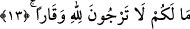

bunlardan her birinin başlı başına ilâhî bir nimet olduğunu vurgulamak içindir.
Bir adam Hasan Basrî (k.s.)’a gelir ve kuraklıktan şikâyette bulunur. Hasan Basrî
ona; “Allah’a istiğfâr et” der. Bir başkası gelerek fakir olduğundan, bir diğeri neslinin
azlığından, bir başkası tarlasının verimsizliğinden şikâyette bulunur. Hasan Basrî
gelenlerin tümüne istiğfâr etmelerini söyler. Bunun üzerine Rabi’ b. Subayh şöyle der:
“–Sana insanlar geldiler, çeşit çeşit şikâyetlerde bulundular ve senden farklı farklı
ilaçlar istediler. Hâlbuki sen gelenlerin tümüne istiğfârı tavsiye ettin!” deyince Hasan
Basrî tefsirini yaptığımız bu âyet-i kerîmeyi okur.
Fethu’r-Rahmân’da şöyle denir: Bu sebeple yağmur duâlarında istiğfar meşrû
kılınmış/emredilmiştir. İstiskâ, yağmur talep etmek için husûsî bir şekilde yapılan
duâdır. Toprak kuraklaşıp, yağmur azaldığında yağmur duâsına çıkmak âlimlerin
ittifakıyla sünnettir. Ebû Hanife ve öğrencileri zimmîlerin yağmur duâsına çıkmalarına
izin vermezler. Diğer üç mezhebin imamına göre ise zimmîler yağmur duâsına
çıkabilirler. Fakat müslümanlarla birbirlerine karışmazlar ve bu iş için husûsî bir gün
tâyin etmezler. Bu hususta bâzı tafsilât, Bakara sûresinde geçmişti.
13. Size ne oluyor ki, Allah’a büyüklüğü yakıştıramıyorsunuz?
Bu cümle, onların Allah Teâlâ için bir vakar ummamalarına sebep olan şeyi inkâr
(yadırgama ve tenkid) anlamını ifâde etmektedir. “Recâ/ummak”, itikad yâni zannetmek
anlamınadır. Çünkü recâ; ancak inanmak ve itikad etmekle olur. Bunun en alt derecesi
ise zan’dır.
Bu yaptığımız açıklamalara göre âyet-i kerîmenin mânâsı şöyle olur: Sizin için ne gibi
bir sebep meydana geldi ki Cenâb-ı Hakk’a îman ve itâatta bulunarak Allah’ı tâzîm ve
yüceltmeyi gerektiren azametine inanmıyorsunuz? Bu konuda sizin elinizde bahâne
uydurabileceğiniz herhangi bir sebep bulunmamaktadır. “Size ne oluyor ki ümid
etmiyorsunuz; yâni Allah’ın azamet ve yüceliğini tanımıyorsunuz, îtikâd etmiyorsunuz;
hattâ O’nun fermanını yerine getirmemekten korkmuyorsunuz?”
Keşfü’l-esrâr’da şöyle deniyor: Buradaki “recâ”, korku; “vakâr” ise azamet
mânâsınadır. Buna göre denmiş oluyor ki sizin elinizde hangi sebep mevcûd ki Allah’ın
azametinden korkmuyorsunuz?
İbn Abbas (r.a.) bu âyet-i kerîmeyi şöyle anlamıştır: Size ne oluyor ki Allah’tan
gelecek cezâdan korkmuyorsunuz ve O’ndan gelecek sevabı -kendisine tâzimde
bulunmak sûretiyle- ummuyorsunuz?